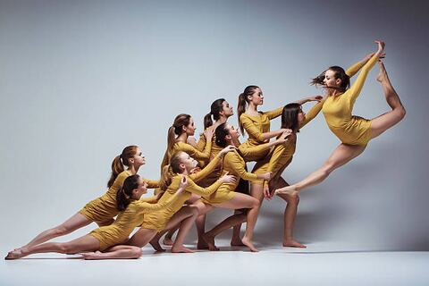

STAGE, WARMED · V2New — the destination behind the “+” on every Media tab (Studio, Team, and Comp Team all had the button with nothing behind it). Same shared-composer pattern as BulletinComposer.dc.html — pre-scoped to wherever it was opened from. Prototyped as opened from Jazz II · Media.
Adding to Jazz II · Media
Choose photos or video
From your camera roll · up to 10 at once
Selected · 3

Caption (optional)
Say what this is…
Groups into Media the same way existing posts do — today's date, this week's row.
Upload to Jazz II
Uploaded by Priya Shah, Instructor · visible to you & the Director right after